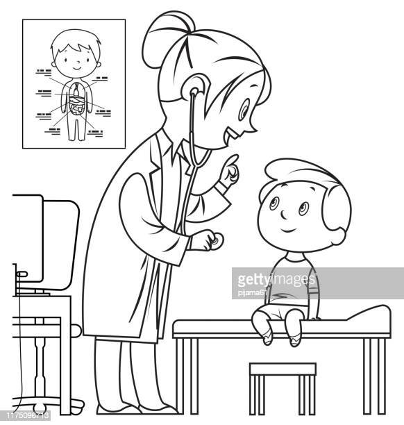
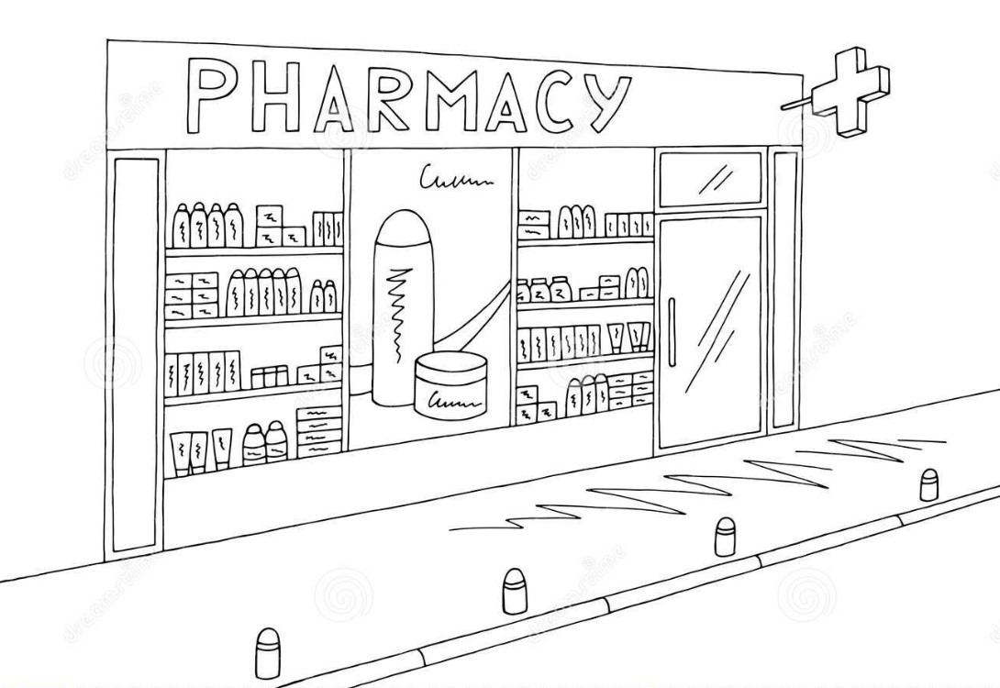

Welcome to Prescribe Right
A site to all your medical needs
 
Login as
Patient
Doctor
Pharmacy
What this website can do
Patients
Can view all their past prescriptions
Can check the availability of medicines at the pharmacies
Can also look for nearby doctors in their locality
Doctors
Can update the prescriptions of the patients to the website
Can check the patients previous medical history
Provide details for the patients to reach out to them
Pharmacies
Can provide medicines based on the prescriptions provided by the doctors
Update the medicine availability and medicine provided to the patients
Can notify the consumers about their availability
LinkedIn
Twitter
Website
© 2023 Prescribe Right @ SSN